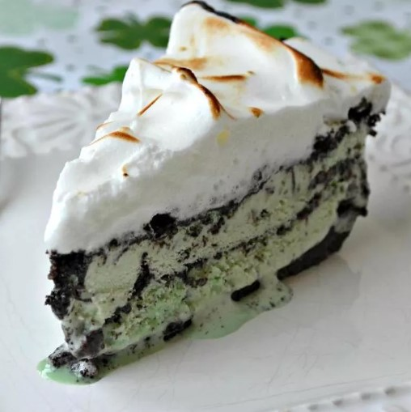

Chocolate Mint Pie

This pie has a chocolate cookie crust and an ice cream filling, but the creme de menthe meringue topping is
what makes it special. It is a perfect St. Patrick's Day treat. Vanilla ice cream can
be substituted for the mint chocolate chip.
- 1 ½ cups crushed chocolate sandwich cookies
- &fract14 cup butter, melted
- 1 quart mint chocolate chip ice cream
- 4 tablespoons creme de menthe liqueur
- 1 cup crushed chocolate sandwich cookies
- 3 egg whites
- salt to taste
- ¼teaspoon cream of tartar
- 2 teaspoons creme de menthe liqueur
- &frac13 cup white sugar
steps of how to prepare Chocolate Mint Pie
- Combine 1 ½ cups cookie crumbs and melted butter or margarine. Press firmly over bottom and up the sides of a 9 inch pie pan. Freeze.
- Spread half of softened ice cream in crust. Drizzle 2 tablespoons creme de menthe and sprinkle ½ cup cookie crumbs over the ice cream. Repeat. Freeze till firm.
- In a clean bowl, beat egg whites until foamy. Add salt and cream of tartar, and beat until slightly stiff. Gradually beat in
sugar until peaks form. Fold in 2 teaspoons creme de menthe.
Spread meringue over pie, and seal to edges. Freeze up to 24 hours.
- Just before serving, broil until top is golden.